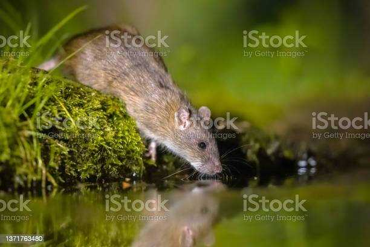

Crianza:
Buen ambiente
En primer lugar, es importante proporcionar un ambiente seguro y limpio para la rata, con una jaula espaciosa que tenga una adecuada ventilación y un sustrato adecuado en el fondo para mantener la higiene.
Bonitos y gorditos
La alimentación de las ratas debe ser balanceada y variada, incluyendo alimentos secos, como el pienso comercial para ratas, así como frutas y verduras frescas, proteínas y suplementos alimenticios.
Un amigo es una luz
Las ratas son animales sociales, por lo que se recomienda mantenerlas en parejas o grupos para evitar la soledad y el aburrimiento. También necesitan ejercicio diario y tiempo de juego fuera de la jaula.
Siempre al Doc
Es importante monitorear la salud de las ratas y llevarlas al veterinario si presentan algún signo de enfermedad o lesión.

Alimentación:
¿Cómo alimentar a tu rata correctamente?
Las ratas son omnívoras, lo que significa que comen tanto alimentos de origen vegetal como animal. En la naturaleza, se alimentan de una variedad de alimentos, incluyendo granos, frutas, semillas, insectos, pequeños mamíferos y aves. Como mascotas, las ratas deben ser alimentadas con una dieta balanceada que contenga una mezcla de proteínas, carbohidratos y grasas. El pienso comercial para ratas es una buena opción como base de la dieta, pero también se puede complementar con frutas y verduras frescas, así como proteínas como carne, pescado, huevos y queso. Es importante evitar alimentos grasosos, azucarados o salados, ya que pueden ser perjudiciales para la salud de la rata. También es importante proporcionar agua fresca y limpia en todo momento.